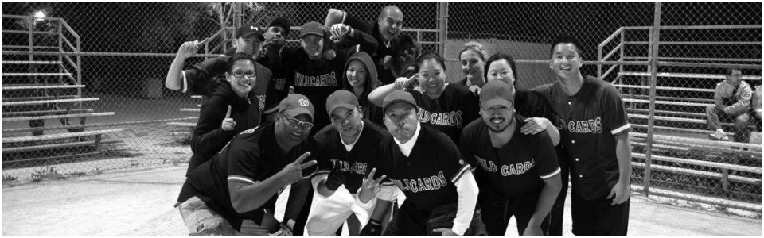
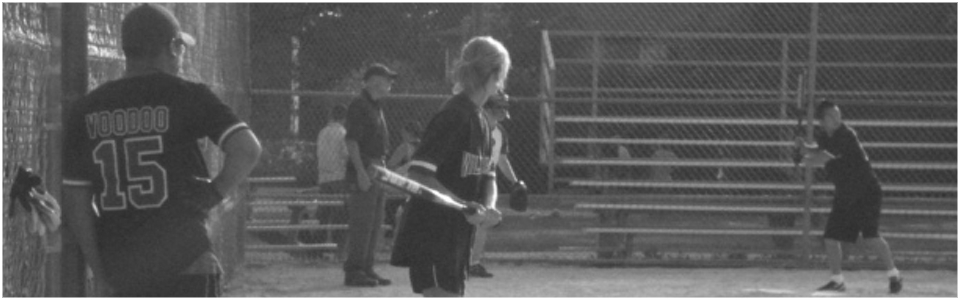
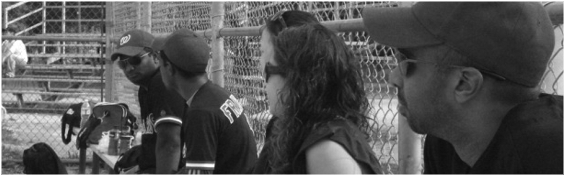

WILDCARDS
established 2005


THE OFFICIAL WILDCARDS TEAM SITE
This is the official site of the Wildcards. We are a softball team that plays for MACS (Markham Adult Co-Ed Slo-Pitch). For more information regarding the league, please go to the official league site link on the resource page.
About Us
Founded in 2005, the infamous Wildcards are noted for their tenacity on the field, swift bats and on-field antics. This spirited assembly of players is led by their fearless leader - Voodoo. The Cards continue to inspire awe and wonder in MACS with their stellar defence and athleticism.
Accolades
- 2008-2014 Season Champions
- 2011, 2013 A Divison Champions
- 2007-2010 B Division Champions
- 2009-2011 Most Sportsmanlike Team
- 2005-2006 Winners of the Last Game
2016 Season Schedule
| Game Time | Location | Away | Home |
|---|---|---|---|
| Sun May 8, 5:00 pm | Milliken Mills - 5 | Wildcards | Sons of Pitches |
| Sun May 15, 9:30 pm | Milliken Mills - 4 | Jagerbombers | Wildcards |
| Sun May 29, 6:30 pm | Milliken Mills - 5 | Wildcards | Rascals |
| Sun Jun 5, 2:00 pm | Milliken Mills - 5 | Wildcards | Pitches Be Crazy |
| Sun Jun 12, 8:00 pm | Crosby Park | Jake's Jugs | Wildcards |
| Sat Jun 18, 10:30 am | Milliken Mills - 2 | Wildcards | Home Wreckers |
| Sat Jun 18, 1:30 pm | Crosby Park | Pitch, better have my money | Wildcards |
| Sat Jun 18, 4:30 pm | Crosby Park | Ringwood SC | Wildcards |
| Sun Jun 26, 8:00 pm | Milliken Mills - 5 | Wildcards | Benchwarmers |
| Sun Jul 10, 8:00 pm | Milliken Mills - 4 | MLD | Wildcards |
| Sun Jul 17, 8:00 pm | Milliken Mills - 4 | Wildcards | Princess Auto |
| Sun Jul 24, 2:00 pm | Milliken Mills - 5 | Run Spoilers | Wildcards |
| Sun Jul 24, 3:30 pm | Milliken Mills - 5 | Amazeballz | Wildcards |
| Sun Aug 7, 5:00 pm | Crosby Park | Wildcards | Nads |
| Sun Aug 14, 5:00 pm | Milliken Mills - 5 | Slug Life | Wildcards |
| Sun Aug 21, 2:00 pm | Randall Park | Black and Yellow | Wildcards |
| Sun Aug 21, 3:30 pm | Randall Park | Amazeballz | Wildcards |
| Sun Aug 28, 8:00 pm | Milliken Mills - 5 | Wildcards | Fouled Out |
| Sun Sep 11, 3:30 pm | Featherstone Park | Wildcards | Master Batters 2.0 |
| Sun Sep 18, 6:30 pm | Milliken Mills - 5 | Wildcards | I'd Hit That |